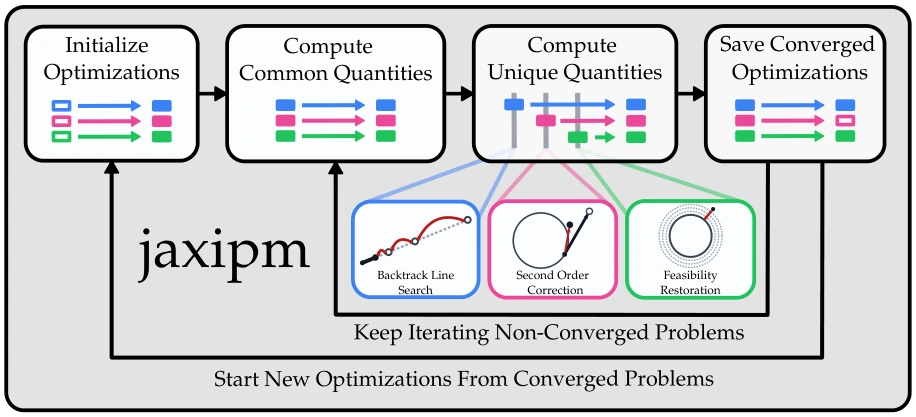
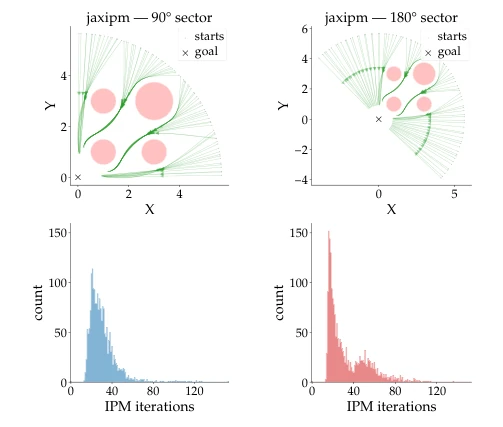
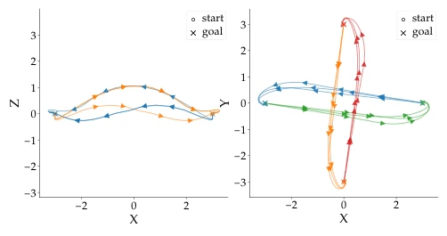
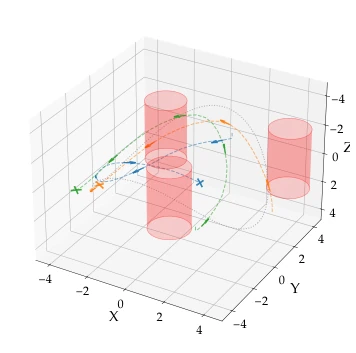
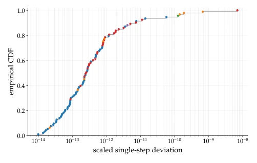

This paper equips the CPU-era IPOPT with GPU wheels, serving as a strong shot in the arm for the robotics optimization field. The authors did not invent a new algorithm, but forcibly integrated IPOPT's logic into JAX's GPU pipeline. Highlights lie in "Heterogeneous Iteration Fusion" and "Iteration-Level Batching", solving the pain point that traditional solvers cannot parallelize control flow branches. But the drawbacks are also obvious: this is essentially a JAX replica of IPOPT, inheriting all its numerical sensitivities and initialization dependencies. 32× acceleration sounds great, but the premise is you can gather enough batch to fill the GPU, otherwise memory and communication overhead may offset the gains. For real-time control, single-problem latency may not improve, but for generating large-scale optimization datasets (e.g., RL training data) it is definitely a powerful tool, bridging the performance gap between gradient methods and sampling methods, allowing model optimization to keep up with data generation speed.
Core robotics problems such as trajectory optimization and inverse kinematics are often reduced to nonlinear programming (NLP) [1], [2]. Existing mature solvers like IPOPT [7] can guarantee hard constraints and optimality, but are limited by CPU architecture and cannot parallelize. In contrast, sampling-based methods (RL, MPPI) [5], [6] utilize GPU batch simulators [10], [11] to achieve order-of-magnitude acceleration. This causes gradient methods to become a bottleneck in data generation and mixed learning pipelines [13]. Existing GPU acceleration schemes like MadNLP [25] accelerate linear solving, but control flow remains on CPU, unable to achieve true NLP batching. This lack of data generation capability hinders the extension of model-based learning methods, limiting the scaled training of robot intelligence. Therefore, there is an urgent need for a solver that can utilize GPU parallelism to solve multiple NLPs simultaneously, to support large-scale data generation and mixed policy learning [33], [34].
jaxipm is reconstructed based on IPOPT [7] and implemented in JAX. Two core innovations: 1. Heterogeneous Iteration Fusion: IPOPT contains multiple control flow branches (such as backtracking line search, feasibility restoration, etc.) [Table I]. Traditional GPUs cannot handle branches. jaxipm parallelizes shared computations of all branches, and computes unique parts for all problems before selecting output, achieving a unified iteration body. This eliminates control flow differences, allowing the entire batch of NLPs to advance synchronously. 2. Iteration Level Batching: Traditional batching requires waiting for all problems to converge (solve-level), causing GPU idling. jaxipm synchronizes at iteration boundaries; once a problem converges, it is immediately replaced with a new problem, reducing GPU idling (Fig 2). This allows thousands of NLPs to be solved concurrently, while maintaining algorithmic consistency with IPOPT. Implemented via JAX, natively supports interoperability with GPU batch learning frameworks, solving the CPU bottleneck.

Fig. 1: We summarize jaxipm: each color represents a different optimization problem being executed in batch. At each iteration, every problem can take different paths, including but not limited to: backtracking line search, second order correction, and feasibility restoration. Each of these heterogeneous paths shares some common quantities in their calculation, which we compute in parallel, followed by the remaining unique quantities sequentially.

Fig. 3: We plot the top-down view of a batch of optimiza- tion solutions (80/2000) from two different initial position distributions, all of which must navigate to a common goal position whilst avoiding obstacles. On the left and right sides, we initialize quadrotors in 90 and 180 degree arcs around the destination, respectively. The bottom plots show the iteration count distributions corresponding to the above plots.
Evaluated in quadrotor NMPC benchmarks, including single-rotor navigation, multi-rotor consensus, and obstacle avoidance [Fig 3, 4, 5]. Baselines are IPOPT and MadNLP. Metrics are throughput (solves/s), average cost, and iteration count. Results show jaxipm achieved 25.25× and 24.74× acceleration respectively in 90° and 180° scenarios (Table II). Speedup ratio increases when difficulty increases (Table III). Dimension expansion (2 to 4 rotors) causes speedup ratio to drop to 16.03×, limited by GPU VRAM (Table IV). Correctness verification shows deviation from IPOPT is less than 10^-8 (Fig 6), proving algorithm equivalence. Experiments show this method significantly improves data generation efficiency while maintaining solution quality, verifying its potential in mixed learning pipelines.

Fig. 5: We visualize the multi-quadrotor consensus task running on our method with 2 and 4 quadrotors. Each colored trajectory shows one quadrotor’s path from its start to its assigned goal. The quadrotors must swap positions while maintaining a minimum separation distance with every other quadrotor throughout.

Fig. 4: We visualize the reference tracking with time-varying obstacles task at ¯v = 1.5 m/s. We vary ¯v between 1.0 and 2.0 to demonstrate how our method’s throughput is robust to problem difficulty, as the quadrotor must fly near actuator limits at optimum.

Fig. 6: We visualize the ECDF of the step-wise discrepancies between our method jaxipm and IPOPT across a full optimization; we use different colors to represent different iteration types.